Portfolio · Unity Developer · Technical Art & Tools
A selection of work where I got art running in real projects: tools I built, shader work, asset pipelines and before/after results.
01 · Personal project
Unity 2022.3 · C# · built end to end as a technical test, with AI-assisted coding
The quilted wall texture stretched and broke at every seam because each wall had a different scale. I wrote a triplanar shader that projects the texture in world space at a fixed size, so all 11 wall pieces line up with no UV work.
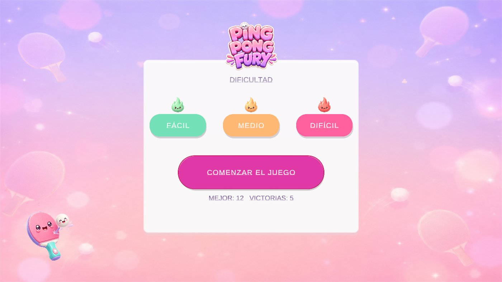
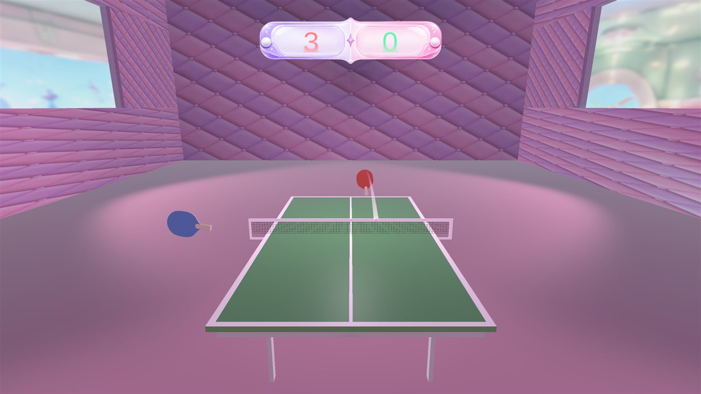
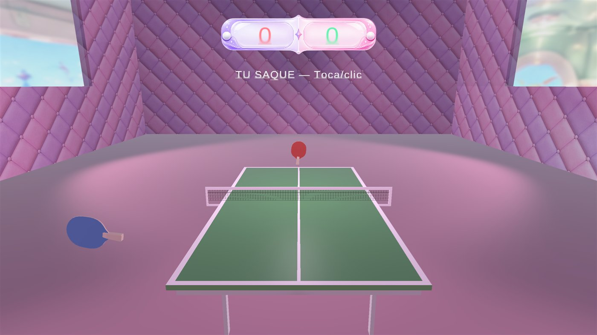
02 · Client project
Arcade training game · web (Phaser) · Node scripts
Built with AI-assisted development; I defined the rules each script checks and reviewed the output.
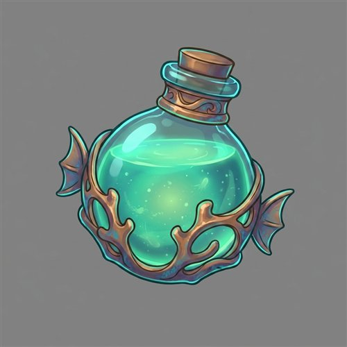
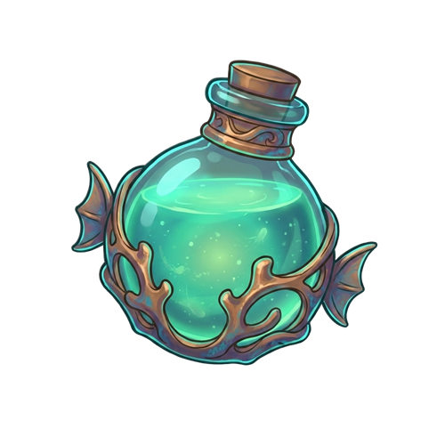
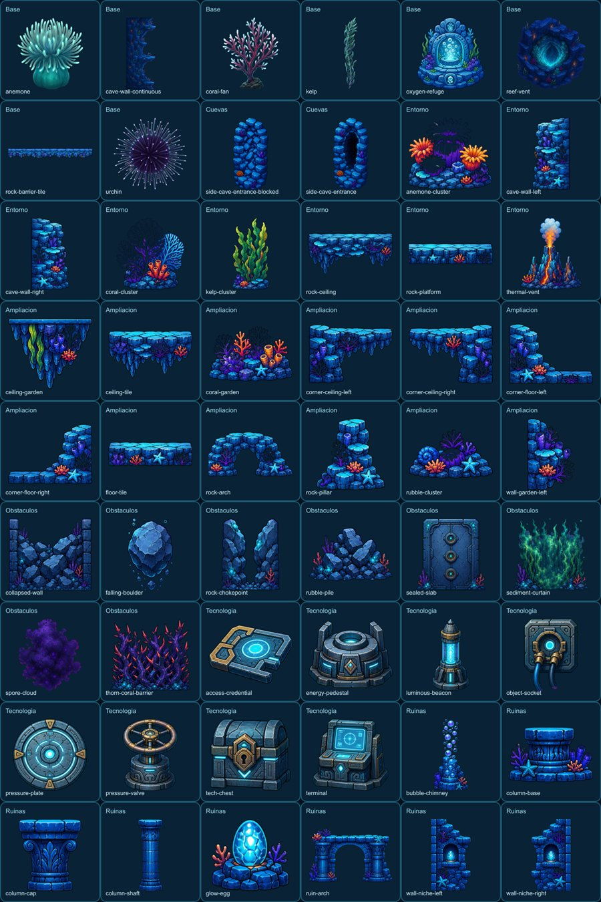
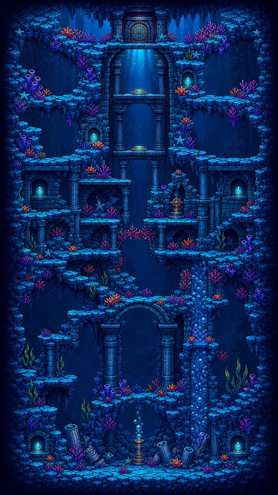
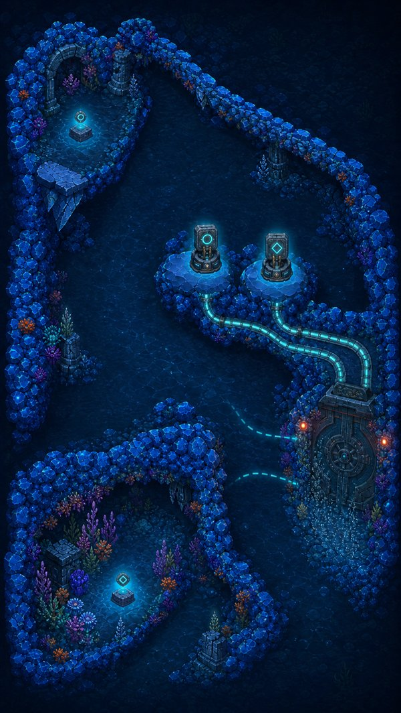
03 · Client project
AR wildlife app · Unity 6 · C# editor scripting · iOS and Android
Before
415 model textures at 2048 px, no mobile override, no mipmaps.
After
1024 px max on Android and iOS, ASTC 6×6 (normals 5×5), mipmaps on.
Before
Client texts edited in Excel and copied into the game by hand; overflowing text found on device.
After
Python script syncs the Excel into the game; an editor report lists every text that does not fit its box.
All tools written with AI-assisted development (Claude Code). I decide what each tool must check, then review and test it in the real project before the team uses it. Documented in the project's developer manual.
04 · Client project
Unity WebGL · C# · UI
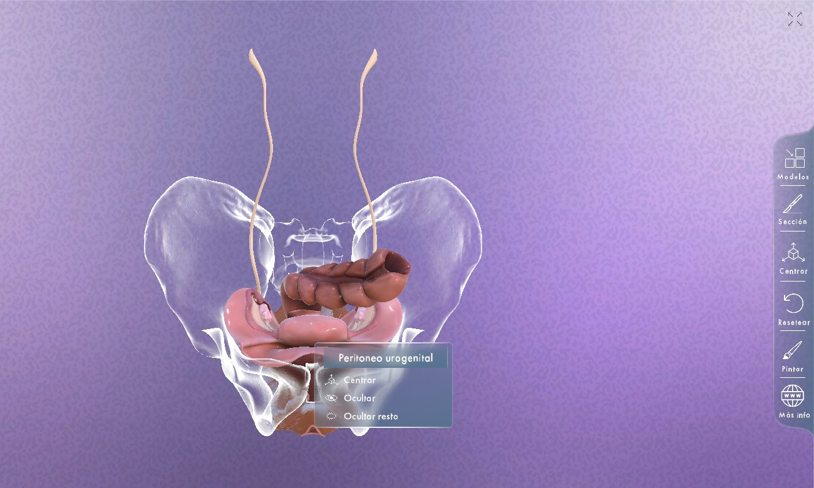
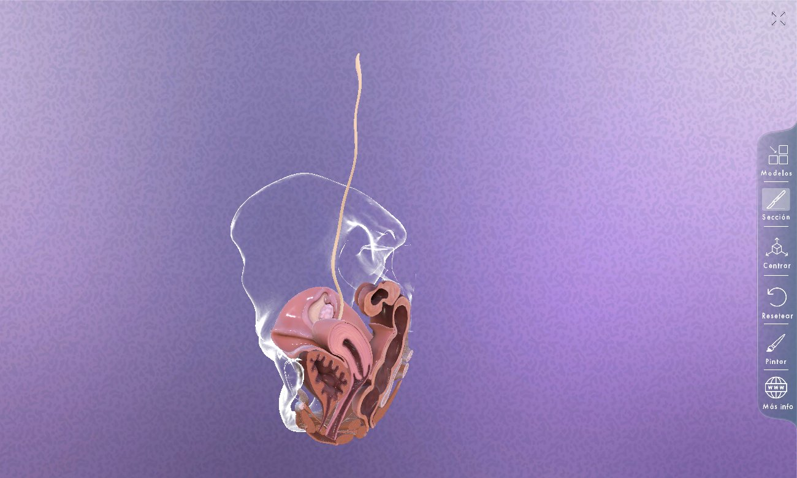
05 · Shipped
Unity apps I worked on from concept to release: UI, art integration and device performance.
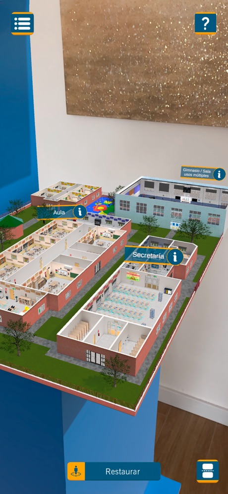
AR 3D school with 17 interaction points, sound level meter and PDF report.
App Store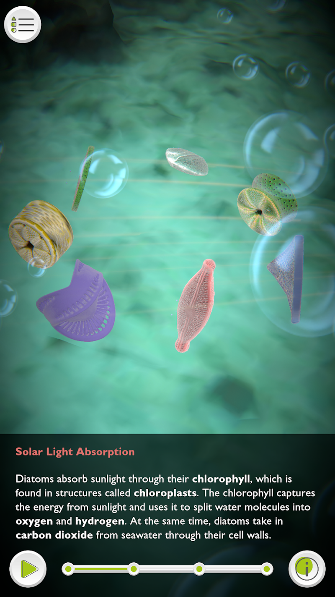
AR companion app for illustrated science cards, with 3D organisms and info panels.
Google Play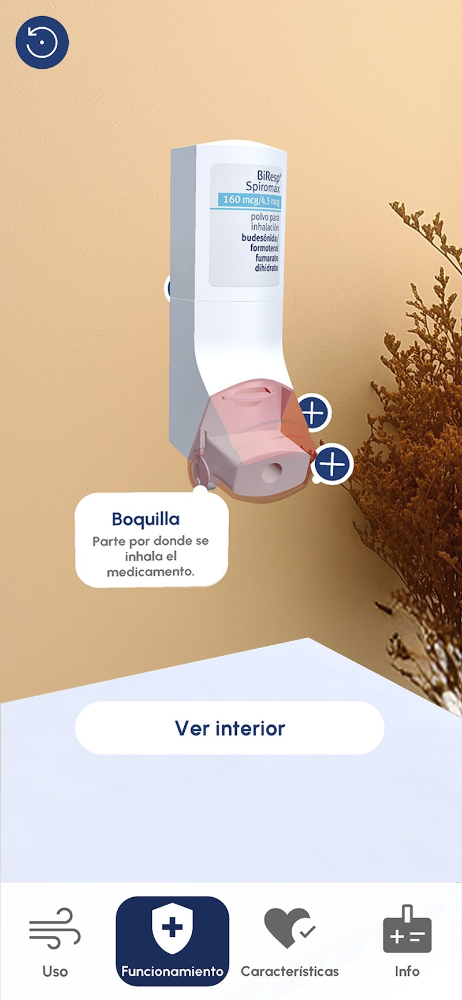
AR training app for healthcare professionals with a guided demo of the inhaler.
Google Play